SystemVerilog_数组
本文最后更新于：2024年7月7日 下午
- 参考
1. 结构体
System Verilog相对Verilog增加了类似C语言的结构体，其可以对一系列相关信息进行分组。
结构体使用struct关键字声明，结构体内的成员可以是任何数据类型，可以是变量、常量、用户自定义类型和其它结构体类型。
1
2
3
4
5
6struct{
int a,b;
opcode_t opcode; //用户自定义类型
logic [23:0] address;
bit error;
}Instruction_Word;对结构体内的变量进行引用，使用下面引用格式。
1
2
3// <结构体>.<变量名>
// 举例
Instruction_Word.address = 32'hF000_001E;结构体 & 数组
- 数组是同类型同尺寸元素的集合。数组通过索引引用。
- 结构体是不同类型和尺寸的变量/常量的集合。结构体成员通过成员名称进行引用。
1.1 结构体声明
结构体可以声明为变量和线网。
当定义为线网类型时，结构体所有成员必须是四态类型。
如果未声明结构体类型，默认结构体为变量类型。
虽然结构体整体可以声明为线网类型，但是结构体内部不可以是用线网类型。
1
2
3
4
5
6
7
8
9
10
11var struct{ //结构体变量
logic [31:0] a,b;
logic [7:0] opcode;
logic [23:0] address;
}Instruction_Word_var;
wire struct{ //结构体线网
logic [31:0] a,b;
logic [7:0] opcode;
logic [23:0] address;
}Instruction_Word_net;
自定义和匿名结构体
可以使用关键字
typedef来声明一个用户自定义类型结构体。1
2
3
4
5
6
7typedef struct{ //结构体变量
logic [31:0] a,b;
logic [7:0] opcode;
logic [23:0] address;
}instruction_Word_t;
instruction_Word_t IW;用户自定义结构体可以在模块或接口内定义，在整个设计块中都可以使用。
- 如果自定义结构体的定义需要在多个模块中、或作为模块或接口的端口使用，那么结构体定义应该放在包中，并导入设计块或 $unit 编译单元域中；或是直接在$unit编译单元域中定义。
如果结构体不使用typedef来声明，那么会被当成匿名结构体引用。
1.2 结构体赋值
结构体在实例化时，可以使用数值列表进行初始化。
System Verilog 使用 '{} 符号包含数值列表。
需要注意：大括号内值的个数需要与成员个数一致。
1
2
3
4
5
6typedef struct{ //结构体变量
logic [31:0] a,b;
logic [7:0] opcode;
logic [23:0] address;
}instruction_Word_t;
instruction_Word_t IW = '{100,3,12,0};
通过引用结构体内的成员，对其进行赋值。
1
IW.a = 100;将结构体表达式赋值给结构体
同样是数值列表进行赋值。
两种方式
（1）按照成员序列依次赋值。
1
IW = '{100,3,12,0};（2）赋值时，指定被赋值结构体成员名称。
1
IW = '{address:0, opcode:8'hFF, a:100, b:5};
在同一个结构体表达式中混合使用成员名称和成员顺序赋值是不合法的。
结构体表达式的默认值
使用
default关键字将结构体所有成员指定为默认值。举例：1
IW = '{default:0}; //设置 IW 所有成员为0使用特定数据类型的关键字也可以给结构体中特定数据类型指定默认值。
1
IW = '{real: 1.0, default:0};默认值赋值优先级
default优先级最低，其次是指定数据类型的默认值，最高是显性使用成员名称的赋值。1
IW = '{default:0, real: 1.0, r1: 3.1415};
1.3 压缩和非压缩结构体
默认情况下，结构体是非压缩的。
- 非压缩是指，虽然结构体的成员使用的是同一个结构体名称，但是他们被当成独立的变量或常量。
- 不同软件工具对结构体的存储分布是不同的。
可以采用
packed关键字显式声明一个压缩结构体。- 压缩结构体按照指定的顺序以相邻的位来存储结构体成员。
- 压缩结构体被当作一个向量存储，第一个成员在向量的最左边，最低位为结构体最后一个成员的最低位。
压缩结构体成员赋值
可以使用以下两种方式
1
2data_word.tag = 8'hf0;
data_word[39:32] = 8’hf0;压缩结构体中所有的成员都必须是整数值，如byte、int、bit、logic创建的向量值。
- 如果结构体中任何一个成员不能用向量表示，那么结构体都不能被压缩。
- 即压缩结构体不能包含 real、shortreal、非压缩结构体、非压缩联合体或非压缩数组。
压缩结构体的操作
- 由于压缩结构体是向量形式存储的，所以对压缩结构体的操作也是向量形式。
- 可以通过关键字
signed,unsigned来声明 有符号和无符号 的压缩结构体。
1.4 结构体传递
1.4.1 通过端口传递结构体
结构体可以放在模块和接口的端口。
但需要注意，结构体必须首先使用
typedef定义为用户自定义数据类型，之后才允许将模块或接口的端口声明为结构体类型。还可以将
typedef定义的包导入到 $unit 编译单元域中，或是直接在$unit 编译单元域中直接定义用户自定义类型。这样可以直接在模块端口使用。
当一个非压缩结构体通过模块端口进行传递时，端口两侧连接的必须是同一种类型的结构体。
1.4.2 将结构体作为自变量传递至函数或任务
前提是，需要使用
typedef将结构体定义为用户自定义数据类型。举例如下：
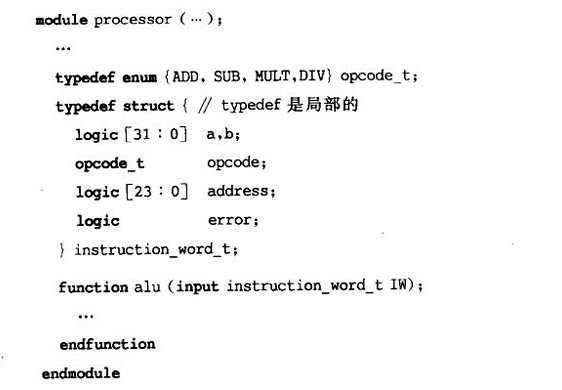 - 当被调用的任务或者函数具有非压缩结构体的形式变量时，必须传递完全相同类型的结构体给函数/任务。
- 在两个不同模块中声明的匿名结构体，即使他们具有相同的名称，同样的成员，但仍不属于相同类型。
- 当被调用的任务或者函数具有非压缩结构体的形式变量时，必须传递完全相同类型的结构体给函数/任务。
1.5 可综合
非压缩和压缩结构体都是可综合的。
通过端口传递以及将结构体作为自变量传递给函数和任务都是可综合的。
通过成员名和列表赋值 这两种方式都是可综合的。
2. 联合体
2.1 联合体 & 结构体
System Verilog 添加了联合体。
联合体只存储一个元素，且元素共用一个存储空间，因此对其中一个成员赋值之后，其它成员的值也会发生变化。
- 该元素可以有多种表示方法，每种表示方法可以是不同数据类型。
- 因此联合体中的成员为该元素的各种可选的数据类型表示方式，但每次只能使用一种类型。
联合体成员的引用方式与结构体一样，举例如下：
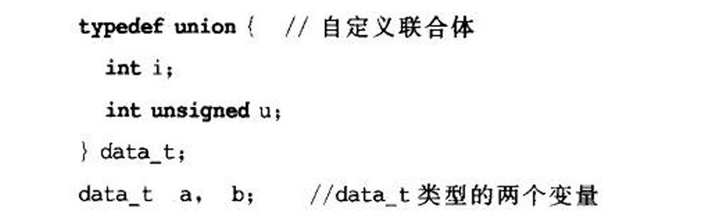
自定义 & 匿名 联合体
- 与结构体一样，可以使用
typedef来自定义联合体。 - 如果没有使用
typedef，就是匿名联合体。
- 与结构体一样，可以使用
2.2 非压缩联合体
其可以包含任意变量类型，包括：real数据类型、非压缩结构体、非压缩数组。
非压缩联合体是不可综合的。
如果一个值使用联合体中的一个成员存储，而用另一个联合体成员读出，那么可能会有读出值不确定的结果。
举例如下，联合体value可以存储两种数据类型的值，并使用结构体
data成员is_real来表示联合体数据类型。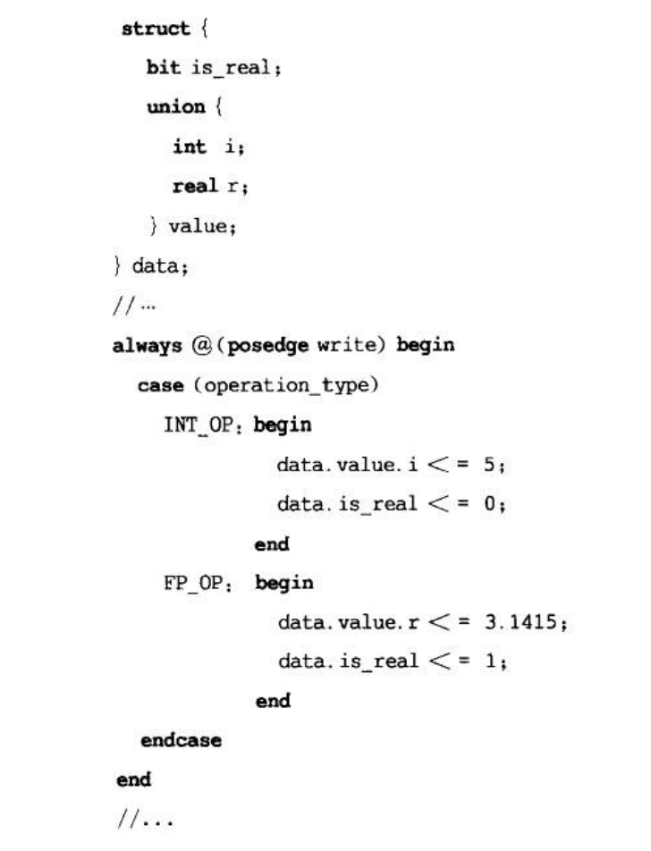
2.3 标签联合体
联合体可以被声明为
tagged类型，可用于监测联合体的使用情况。使用标签表达式将值存储到标签联合体中，并设置隐含标签。举例如下。
若已完成标签表达式赋值之后，在该标签联合体中进行读出/写入的成员与标签不一致时，会进行报错。
1
2
3
4
5
6
7union tagged {
int i;
real r;
} data;
data = tagged i 5; //标签表达式：关键字tagged 成员名 存储值
d_out = data.r; //错，读取成员与隐含标签不一致
data.i = 7; //对，与隐含标签一致
2.4 压缩联合体
压缩联合体只能存储整数值，不可以包含 real/shortreal 数据类型的值，或非压缩结构体、非压缩联合体、非压缩数组。
压缩联合体中，要求每个成员的位宽个数是相同的。
压缩联合体是可以综合的。
压缩联合体允许一种方式写入，另一种方式读出；这是由于其成员位宽一致。对齐方式相同，因此成员中数据是保持一致的。举例如下：
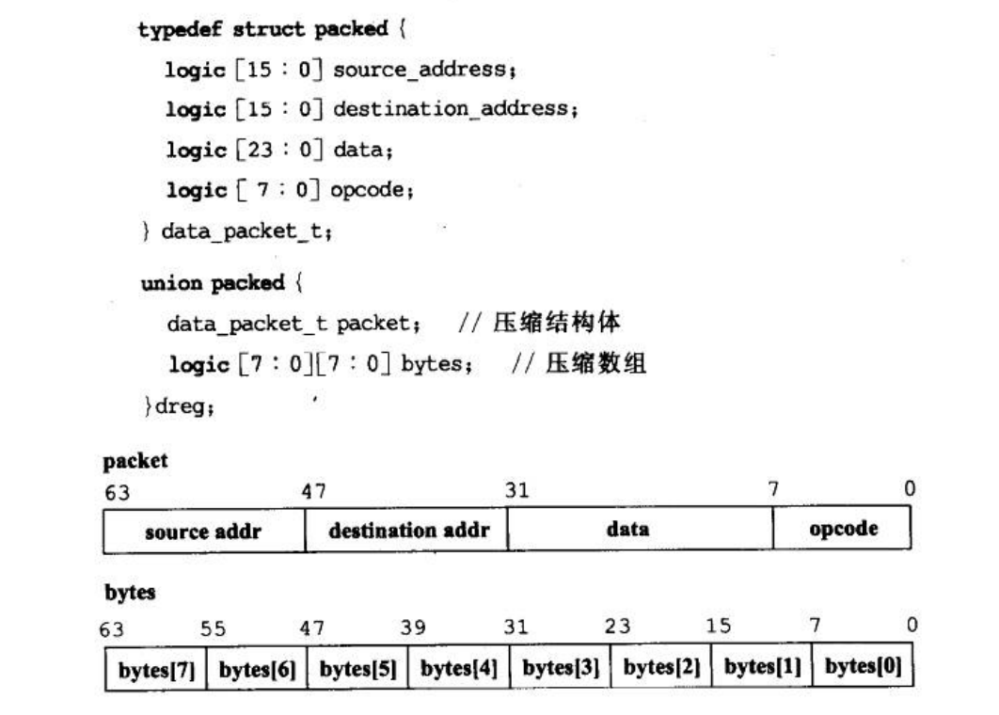
压缩的标签联合体
- 联合体可以被声明为既是压缩的又是标签类型的。
- 此时成员不需要位宽均相同，但仍要求全是整数类型。
- 该类型联合体要求如果存在标签表达式，那么只能在含该隐含标签的成员中读值，其它成员读值均错误。
3. 数组
3.1 非压缩数组
3.1.1 关于非压缩数组
Verilog 中的数组
- Verilog-1995 要求数组声明仅限于
reg、integer、time类型，且只可以声明一维数组。 - Verilog-2001
允许除
event类型外所有的变量和线网类型都可以用于数组声明，且可声明多维数组。 - Verilog 要求一次只能访问数组中的一个元素(中的1位/多位)，一次访问多个元素是错误的。
- Verilog 对于非压缩数组要求，虽然有相同的数组名字，但不同元素的存储是独立的。
- Verilog-1995 要求数组声明仅限于
System Verilog 对非压缩数组的加强
可以使用event数据类型以及System Verilog 所有的数据类型，包括
logic、bit、byte、int、longint、shortreal、real。可以使用
typedef来声明用户自定义非压缩数组，包括使用enum和struct类型。可以引用整个非压缩数组和一段元素（同一维下一个或多个相邻的元素）。
若进行非压缩数组的复制，需要保证等号两边的结构相同，即元素个数大小相同。
可以像C语言中一样，只指定维度大小，而不用指定元素开始结束的地址；举例如下。
1
2
3logic [31:0] data [1024]; //对，与下面相同
logic [31:0] data [0:1023];
logic [32] data_vector; //错，但该简化声明不可以使用在向量声明上
3.1.2 非压缩数组初始化
在声明时，可以使用
'{}内的值序列进行初始化。举例如下。注意赋值要求括号的套数与数组维数一致。
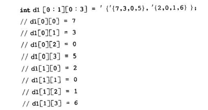 对于不同维度的值相同时，可采用下面的方式。
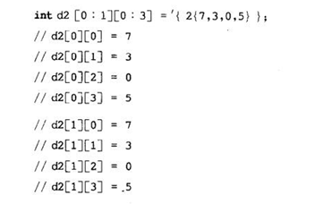
注意：
'{}及'{n{}}与 Verilog 的拼接{}和复制n{}不同。- 前者作为一个值序列，每个值可以是无位数的文本值。
- 后者要求括号内的文本值的位数必须被指定，更不能是实数。
为非压缩数组指定默认值
可以通过一个默认值来初始化非压缩数组的所有元素，举例如下。
要求指定的值必须与数组的数据类型匹配。
可以指定整个数组或是数组中的一段
1
2int al [0:7][0:1023] = `{default:8'h55};
a[0] = '{default:4};
3.1.3 非压缩数组赋值
System Verilog中，可以有以下两种新的非压缩数组赋值方法。
使用值序列对整个数组进行赋值。
使用值序列给数组的一段进行赋值。
举例：
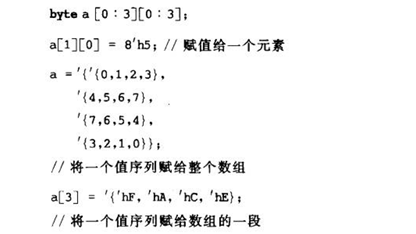
3.2 压缩数组
3.2.1 关于压缩数组
对于Verilog来说，一维向量就是一个一维的压缩数组。如：
1
reg [31:0] data;SystemVerilog 可以声明多维压缩数组，如：
1
logic [3:0][7:0] data;SystemVerilog 要求整个数组的存储必须是连续的，与向量的存储一样。
举例：logic [3:0][7:0] data;
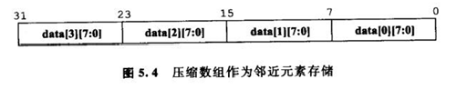 注意只有位形式的数据类型才能被压缩，例如logic/bit/reg/其它压缩数组、压缩结构体及压缩联合体。
- 压缩数组还可以由任何Verilog线网类型组成。
压缩数组可以作为整体、位选择、部分选择进行引用，举例如下。
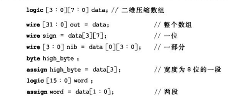 对于Verilog向量的任何合法操作都可以应用于压缩数组。
- 包括拼接操作、算数操作、关系操作、位操作、逻辑操作等。
- 同Verilog一样，如果向量长度不匹配，压缩数组会进行截取/扩展。
3.2.2 压缩数组初始化
- 同Verilog向量一样，可以在声明时使用最简单的赋值进行初始化。
- 赋值可以是一个常数、常数的拼接或常数的复制。
3.2.3 压缩数组赋值
可以进行以下赋值：
- 数组的一个元素
- 整个数组
- 数组的一部分
- 数组的一段（多个相邻的子域）
举例如下
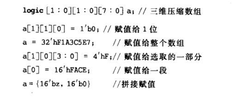
3.3 压缩/非压缩数组 使用规则
使用非压缩数组模拟存储器，以及抽象数据类型。
使用压缩数组创建有子域的变量。
数组可以是压缩和非压缩的混合维度。
例如，标准的Verilog存储器就是一个混合的数组类型。
1
2logic [63:0] mem [0：4095]; //由64位的压缩数组组成的非压缩数组
wire [3:0][7:0] data [0:1023]; //由32位元素组成的非压缩数组，每个元素都是一个4Byte的压缩数组。
非压缩维度的索引先于压缩维度。
3.4 数组复制
3.4.1 不同数组类型之间的复制
压缩-压缩 数组复制
可以直接复制，因为压缩数组是当向量来处理的。
当尺寸和类型不匹配时，会按照Verilog中的规则进行截断或扩展。
非压缩-非压缩 数组复制
当两个非压缩数组具有相同维数和元素位数以及相同类型时，才可以直接复制。
当两个非压缩数组结构大小不同时，可通过流转换实现复制。
非压缩-压缩 数组复制
不能直接复制，因为非压缩每一个元素都是单独存储的，因此不能看作一个向量。
但可通过流转换实现复制。
压缩-非压缩 数组复制
- 同样不能直接复制，但可通过流转换实现复制。
3.4.2 位流转换
位流转换将非压缩数组临时转换为向量形式的位流，复制给其它数组。
源数组与目标数组的位数必须相同，但两个数组的每个元素宽度可以不同。
位流转换机制适用于以下几种情况：
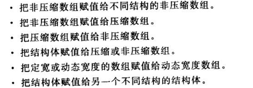 转换要求至少目标数组是用
typedef表示的自定义类型。举例如下：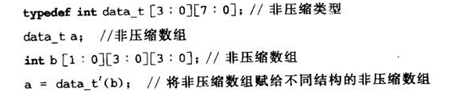
3.5 数组中使用用户自定义类型
可由自定义元素组成非压缩数组。
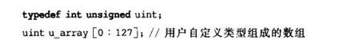 用户自定义类型数组，并组合成复合数组。
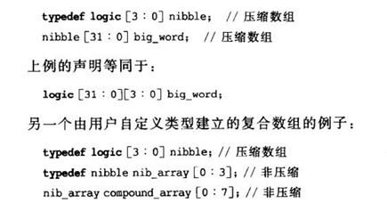 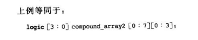
3.6 数组通过端口/任务/函数的传送
Verilog
- 在这里，压缩数组是一个一维向量，其允许压缩数组通过模块端口传送，可以进/出任务/函数。
- 但不允许非压缩数组通过模块端口传送以及在任务/函数中传送。
SystemVerilog 进行扩展，允许任何类型以及任意维数的数据通过端口传送，并可以作为任务和函数的自变量传送。
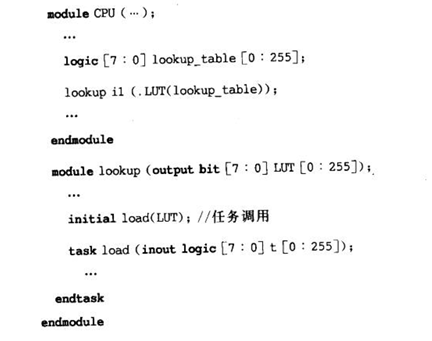
3.7 结构体和联合体 & 数组
3.7.1 结构体和联合体构成的数组
压缩和非压缩数组的元素也可以是结构体或联合体。
在压缩数组中，结构体和联合体也必须是压缩的。
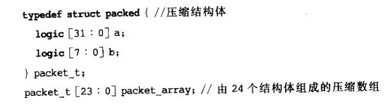 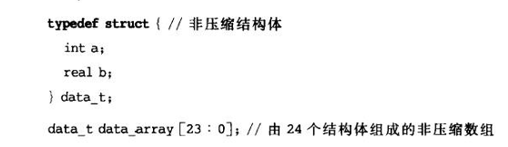
3.7.2 结构体和联合体中的数组
结构体和联合体可以包含压缩/非压缩数组。
压缩的结构体和联合体只可以包含压缩数组。
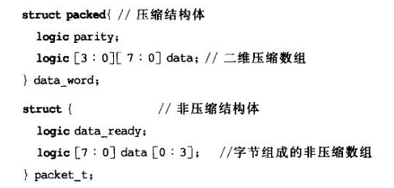